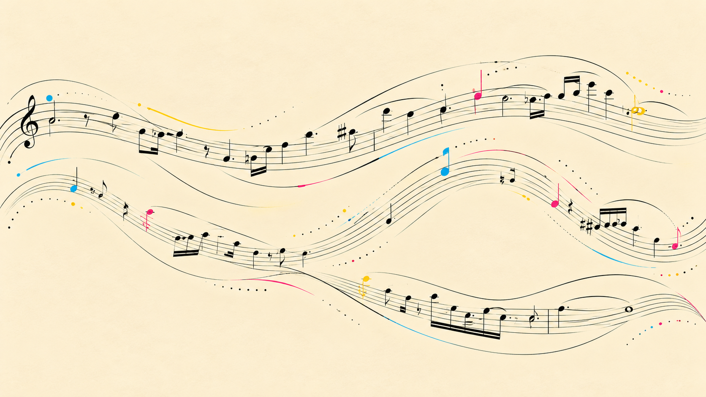
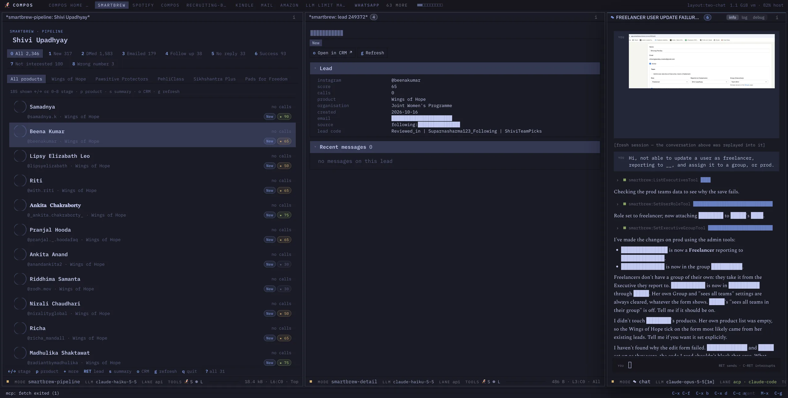
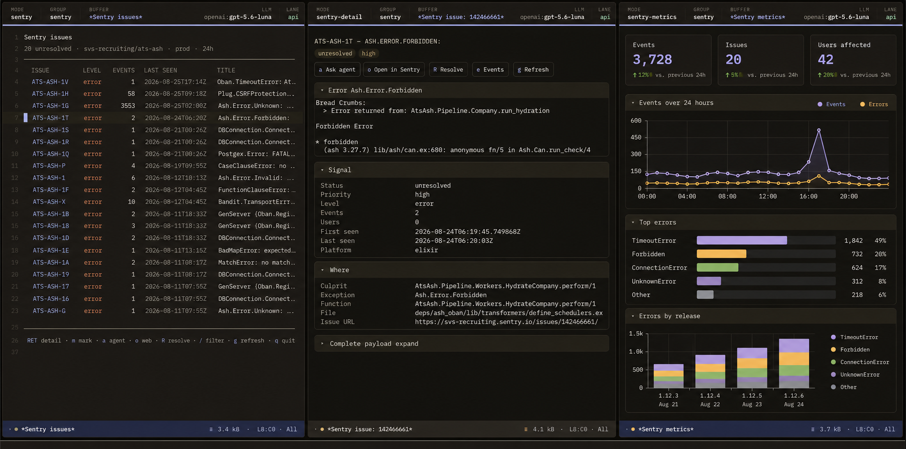

01 · fits you
Work the way you think.
Your workspace fits your habits, not the other way round. Need a new tool? Ask for it and have it in minutes. When your work changes, your tools change with it.

Compos is the hackable harness for power users to build the software you need - for work or for life.
Your whole working day in one place that fits the way you think. Your agents already know what you are working on, so you explain less and get more done, on the AI subscriptions you already pay for.
Pull your context to you instead of going there. What a luxury. When the job is done the app can go. Your buffers, your history and the commands you made stay.
Build your app as you work with your agent. Over time you get software that fits your head, not the other way around.



Writing an email and want to see server health for that third client? Swipe desktop, switch browser, wrong window, cmd-tab, cmd-tab... I mean, can you imagine?
In Compos you don't go to where the thing is. You bring it here. Each thing lands in a buffer. You see it, your agent sees it, and the same keys work on all of them.
Same keys everywhere: m mark / filter RET open a ask the agent g refresh
Point the agent at where your attention is. Compos agents are more like copilots than bounty hunters.
Collect context into groups. One group per task: its buffers, its windows, its chat. Switch tasks and the whole room switches with you.

Compos can listen for WhatsApps, emails, DMs - you name it. If you can reach it in the browser or the cli, you can get an agent to handle it.
It takes care of the routine and brings you only what needs you. Nothing important goes out without your OK.
Need a new tool? Ask for it and have it in minutes. The agent adds the command while Compos runs. No restart, no plugin store, no waiting for a release.
Then it is a command like any other. You, your agents and your other apps all use the same one.
RET open · m mark · r reply · z snooze · / filter
Your workspace fits your habits, not the other way round. Need a new tool? Ask for it and have it in minutes. When your work changes, your tools change with it.
Your agent already knows what you are working on. Stop pasting, re-explaining and correcting. It stays on the task in front of you.
Attach an agent to anything. Agents see the context you do, so they know what is important now. You stay in charge of what an agent may do on its own.
Mail, Slack, presentations, notes, reading - you name it, you can point your agent at it. Stay in one place and get into your flow state.
Hand off the follow-ups, summaries and first drafts. Work comes back to you when it is ready, and nothing important goes out without your OK.
Use the AI subscriptions you already pay for. No markup, no extra key, and your data stays yours.
For the human in the loop. You are an expert in your field. You are an operations maven. You love Excel. AI would supercharge you if only you had the right tools.
Get through the inbox faster and never drop a follow-up. Approve drafts instead of writing them, and see the whole day at a glance.
Read, take notes and write in one place. Get help comparing sources and checking a draft against what you read, without losing the thread.
Get focused changes, not rewrites, from agents that see the code you see. Stay in the place you think, from the first note to the last commit.
Start with what you use today. Shape it a little more each week, with an agent that knows exactly what you are working on.